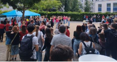

Schulklima oder Klimaschule - neuestes Verwirrungskonzept
Dieser Beitrag erschien ursprünglich im Spickzettel/Juni 2024. Zur Originalausgabe
Zunächst einmal: die Schulklimagespräche widmen sich zwar auch dem Zusammenwirken dynamischer Prozesse, aber nun nicht auf die Meteorologie unserer Erde, sondern das Flair unseres Schullebens bezogen. Die Initiative hat das Ziel, den Schülern eine Hilfe und Ideenschmiede zu sein, ihnen eine Stimme zu geben.
Gemeinsam mit Schülerinnen und Schülern des RoRo versucht Frau #, welche damit im Übrigen den offiziellen Titel einer Lehrerin mit besonderer schulischer Aufgabe (LbschA:)) trägt, auch unsere Stimmen zu wahren und einen Raum für neue Ideen zu schaffen. Dazu sind alle paar Monate Treffen angesetzt, zu denen Schüler freiwillig kommen können, um ihre Ideen zu äußern, Kritik zu üben und bestenfalls auch Lösungsvorschläge einzubringen. Das letzte dieser Treffen war am 20. März, die nächsten werden immer in den Lernsax-Kalendern beziehungsweise ein paar Tage vorher an den Monitoren angekündigt. Die Grundidee für die Treffen stammte aus Schülerinitiative, genauer gesagt von den letzten Zwölfern. Diese hatten wohl die Kommunikation einiger Lehrer kritisiert und sich mehr Unterstützung gewünscht. Unterstützung bei offenen Problemen, offenen Fragen. Die Schulklimagespräche dienen aber auch als Ideenschmiede. Zu Beginn der Gespräche gab es einen eigentlich ganz guten Andrang, hauptsächlich durch Ältere, doch mit der Zeit ging die Zahl der Beteiligten leider zurück. „Kleiner Kreis, gleiche Gesichter“, so Frau #.
Ebenfalls zu den Aufgaben von Frau # gehört die Entwicklung von Konzepten, die das Zugehörigkeits und Gemeinschaftsgefühl am RoRo fördern, wozu auch die aktive Beteiligung aller Schüler, Lehrer sowie auch Eltern am Schulleben gehört. Seit Mitte April diesen Jahres schwebt ein weiteres Projekt im Raum, das das Ziel trägt, bestehende AGs, z.B. die AGs Klimaschule, Courage, Geschlechtergerechtigkeit sowie weitere des Schülerrates, miteinander zu vernetzen, um so an Zeit und Organisation zu sparen, an Effizienz zu gewinnen. Damit können vor allem auch von Schülern initiierte Projekte einfacher umgesetzt werden.
Ein weiterer Wunsch der Zwölfer vergangenen Jahres war, dass ein besserer Überblick zu bestehenden Unterstützungsangeboten geschaffen würde. Dieser Wunsch wurde in Form einer „Unterstützungsliste“ umgesetzt, welche sich auf Lernsax unter den Dateien des RoRo (Informationen und Belehrungen) findet. Diese Liste stellt eine Sammlung aller Ansprechpartner dar, beispielsweise Positionen wie die der Vertrauensschüler und der Schulsozialarbeit oder der Nachhilfeangebote. Jedoch hapert es im Moment noch an der Umsetzung einiger Ideen. Viele Thematiken, wie der Wunsch nach einer längeren Frühstückspause (seitens der fünften Klassen) oder mehr Fahrradparkplätzen, lassen sich nur schwer realisieren. Beispielsweise ist man aktuell dabei, weitere Sitzmöglichkeiten für die Gänge zu beschaffen, um mehr Komfort und Ästhetik zu gewährleisten. Diese sind aber relativ preisaufwendig und der Haushalt der Stadt Dresden bietet zurzeit nicht genügend Kapital für eine derartige Unternehmung, so ist man auf Spenden angewiesen, s. S. 28! Weitere Projekte waren der Wunsch nach einem Sommerfest, einem späteren Unterrichtsbeginn, mehr Zeit für den Raumwechsel und die Erlaubnis, eigenes Mittagsessen in der Mensa verzehren zu dürfen, umso mehr Zeit mit seinen Freunden verbringen zu können. Ab und zu schwebten auch Konflikte mit einzelnen Lehrern im Raum. Oft würden Projekte an juristischen Regelungen scheitern oder einfach aus schulorganisatorischen Gründen schwer umsetzbar sein. Des Weiteren würde mangelnde Beteiligung, auch die seitens des Elternrates, für die Initiative nicht gerade förderlich sein, so Frau #.
Damit wir uns zukünftig auf Projekte wie die kommende Wanderausstellung zur EU-Wahl oder auch das Frühlingsfest der Elfer freuen können, ist das Programm zweifelsohne auf mehr Beteiligung angewiesen. Wenn ihr Ideen, Wünsche oder auch Kritik habt, dann kommt zu den Schulklimagesprächen und/oder meldet euch bei Frau #!
Jeremias
2024/06
